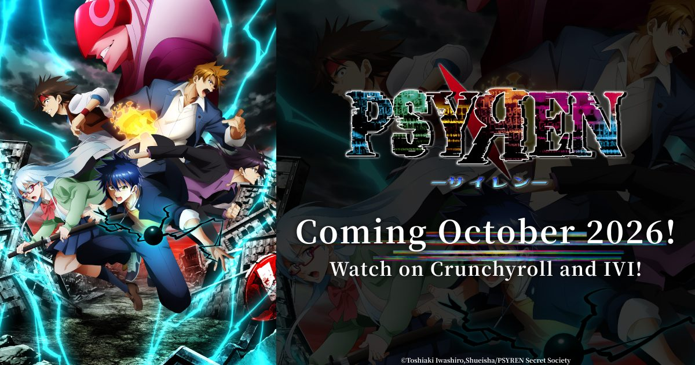

2026-09-17 · 动漫深读
9 月 11 日，REMOW 一次性甩出《PSYREN》的新预告、主视觉和开场曲《WARNING!!》（三人组合 CLAN QUEEN 演唱）。这部岩代俊作在《周刊少年 Jump》连载（2008–2010）的异能战斗漫画，当年人气不差却始终没等来动画；同期的不少 Jump 台柱早上了屏幕，它却一直停在"应该有动画吧"的传说里。十五年过去，它终于要在 10 月开播，还是 Crunchyroll 全球独占。

故事的开场很"街":高中生 Ageha 在公用电话亭捡到一张神秘的红色电话卡，几天后，拿着同款卡的青梅竹马 Sakurako 凭空消失。顺着这张卡，Ageha 被卷进一个叫"Psyren"的秘密组织，以及一场全国范围的离奇失踪事件——一旦接入，就是一场改变命运的致命游戏。
这次动画化最该被记住的不是"终于来了"，而是制作方甩出的一句话：完整改编，一直到结局。 对一部 16 卷、跨度两年的漫画来说，承诺"改到结局"是相当少见的大胆——多数漫改要么腰斩式收尾，要么无限季播。PSYREN 选择把整条线一次讲完，本身就是一个质量信号。
① 红色电话卡 + 全国失踪，是钩子。 它把"日常失踪悬疑"和"神秘组织"焊在一起：你以为在查青梅竹马，其实掉进了一个全国性的消失谜团。这种"从个人牵挂滚成世界阴谋"的起手式，是 Jump 战斗番最稳的开局。
② PSI 超能力，是战斗的燃料。 被拉进 Psyren 世界后，角色陆续觉醒名为"PSI"的精神能力（念力、预知、爆发性攻击……），在毁灭后的未来世界里厮杀。9/11 的预告已经放了 Ageha、Hiryu Asaga 等人释放 PSI 的战斗片段——它不是纯智力生存游戏，而是一部"越战越强"的成长型战斗番。
③ 班底：Satelight + 小野学，基因对得上。 制作是 Satelight（《创圣的大天使》《战姬绝唱 Symphogear》），监督小野学正是 Symphogear 的监督，系列构成吉田玲（游戏王系列）操刀，人设奥山晃。Symphogear 那种"边唱边打、音乐驱动战斗"的血脉，和一部"异能战斗 + 燃向 OP"的 PSYREN 是同一种气味——CLAN QUEEN 的 art rock 式《WARNING!!》一放，调性就立住了。
④ 全球独占发行，但中国除外。 Crunchyroll 拿下除日本、中国外的全球独播，俄罗斯交给 IVI。这意味着大陆观众想看，得等国内平台（B 站 / 腾讯等）后续引进——档期上会比海外晚一截，这点得提前说清楚。
"被遗忘的神作"补票潮。 长尾 Jump IP 在沉寂多年后突然动画化，这几年越来越常见。REMOW 这类发行方专挑"当年火过、粉丝还在、却从没动画化"的 IP 收割——PSYREN 是典型的一张：粉丝基数真实存在，只是缺一个时机。
母题亲缘：它其实比《弥留之国的爱丽丝》早十年。 "致命游戏 + 神秘组织 + 幸存者"这套结构，PSYREN 在 2008 年就开始写了；AiB 把这类母题带成全球爆款，是后来的事。区别在 PSYREN 加了"时空跳跃（毁灭的未来世界）"和"PSI 成长"，所以它不是纯生存悬疑，而是"战斗番版的弥留之国"。站在这个坐标上，它的竞品不是 AiB，而是《某科学的一方通行》《约战》那一路"校园 / 都市异能"——只是叙事骨架更硬。
风险同样具体。 Satelight 履历参差：Symphogear 封神，也有中庸之作；2008 年的人设放到 2026 年的屏幕，审美可能显旧；而"致命游戏"赛道现在挤得要命，观众对这套母题的耐心早被消耗过一轮。再加上"完整改编 16 卷"的承诺，反过来也是 pacing 隐患——塞得太满会糊，拆得太散又对不起"到结局"的承诺。
和同档 Crunchyroll 新番的关系。 我们 9/16 写过《Overgeared》：那是连载中的轻小说改、主角走"锻造流"。PSYREN 则是已完结漫改、且承诺完整改编——两类"补票"本质不同：一个赌连载后续的动画化节奏，一个赌长篇一次讲完的压缩功力。
我们的期待值：7.8 / 10。 加分给母题先发优势（早于 AiB 十年）、Satelight + 小野学的音乐战斗基因、"完整改编到结局"的诚意；扣分给制作公司履历波动、原作审美年代感、以及拥挤赛道的先发劣势。它不是稳赢，但值得赌一集。
我们的观察： REMOW 这套"长尾 Jump IP + 全球独占发行"的打法越来越熟练。PSYREN 不是孤例，而是清单上的一格——这类 IP 的粉丝忠诚度极高，一旦动画化，首集讨论度不靠营销靠情怀。发行方赌的从来不是新观众，是老粉的回流。
我们的观点： 别把它当成"又一部异能战斗番"。它其实是一张迟到十五年的补票——当《弥留之国》把"致命游戏"变成潮流，PSYREN 只是终于等到属于自己的那班放映。它值不值得看，不取决于母题新不新，取决于 Satelight 能不能把 16 卷压成一口气看完而不喘。
我们的案例 / 对比： 和《弥留之国的爱丽丝》（同母题、不同媒介与结局形态）、某科学 / 约战（PSI 系都市异能战斗）、Overgeared（同档 Crunchyroll 新番、但连载轻改 vs 完结漫改）放一起看，PSYREN 的差异化只有一句：它是最早写这套母题、却最晚动画化的那一个。情怀是它唯一的护城河，也是它最大的变数。
我们的实验（给不同观众的行动清单）： ① 先去看 9/11 那支预告，用演出和 OP 判断调性对不对味；② 等 10 月首集定调，再决定是否追更；③ 大陆观众→盯国内平台引进，Crunchyroll 不含中国，别干等海外档；④ 老漫画粉→直接冲"完整改编"这个卖点，这是它相对于其他漫改最硬的底牌；⑤ 路人→把它当"战斗番版弥留之国"试一集，不合胃口就撤，不亏。
《PSYREN》不是因为"新"才值得看，而是因为"迟到了十五年还活着"才值得看。它没赶上最好的时候，却赶上了最合适的时机——当致命游戏成了潮流，这张红色电话卡终于拨通。对 8bitACG 的读者来说，它最划算的打开方式不是盲追，而是先看一支预告、再等一集首播：如果 Satelight 把火点着了，这张十五年的票，就值回了票价。
资讯来源：REMOW 官方公告、Animation Magazine / OtakuKart 报道、Anime News Network 秋季档表、psyren-anime-global.com 官网。本站为导航聚合站，外链均指向官方 / 平台站点，内容仅供交流学习。